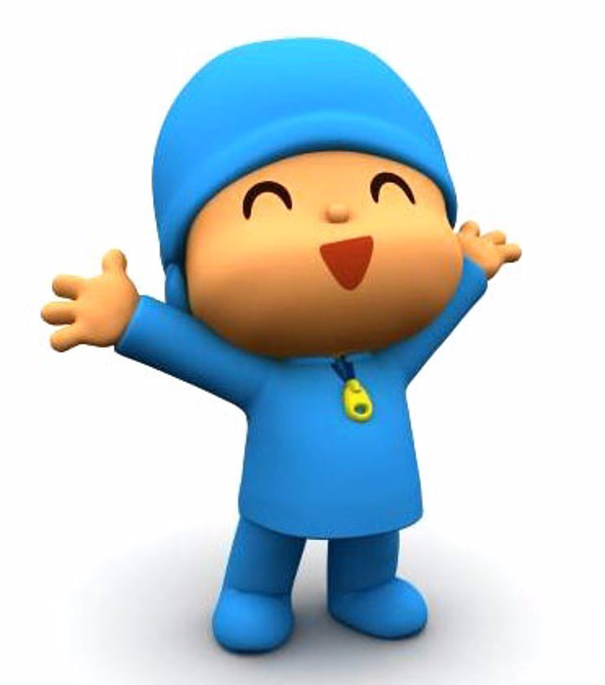

Las aventuras de DOKI
Doki es el héroe de nuestras historias. Es intrépido, optimista y curioso; y siempre está preparado para comenzar una nueva aventura o viaje. Doki y sus cinco amigos, Gabi, Fico, Anabella, Oto y Mundi pertenecen al Club Internacional de Exploradores, una organización dedicada a la exploración, descubrimiento y aprendizaje. Juntos viajan por todo el mundo enfrentándose a lo desconocido, explorando tierras lejanas, interactuando con culturas exóticas y resolviendo los problemas que se le presentan. A lo largo del camino, todos los integrantes del club hacen nuevos amigos y lo que es más importante, aprenden a creer en sí mismos y en los demás, confiando en la capacidad ilimitada de su imaginación. Seguir leyendo...
POCOYO

Curioso y juguetón, Pocoyó es un niño que estimula la imaginación de los preescolares haciéndoles participar en los juegos junto a sus amigos: Loula, Pato, Pajaroto y Elly, la gran elefanta rosa. A través de momentos divertidos y sencillas bromas visuales, Pocoyó se comunica con los pequeños espectadores haciéndoles vivir situaciones con las que se pueden identificar fácilmente. El objetivo es conseguir que la audiencia salte, baile y se ría con los personajes. Simplemente se trata de descubrir el mundo que los rodea: averiguar para qué sirve una radio y aprender a imitar a los animales o a jugar el golf.
Al comienzo de cada episodio, se puede ver a Pocoyó jugando con sus amigos. De súbito, algún objeto o criatura llama su atención. El pequeño lo estudia con la ayuda del espectador hasta que finalmente celebra la incorporación del nuevo elemento a su mundo.
Seguir leyendo